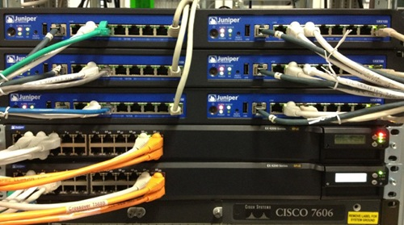

En 2008, je vous exposait les efforts que faisaient les grands groupes de télécommunication pour apporter Internet sur l'île de la Réunion en tirant des câbles dans la mer. Mais il y a d'autres méthodes pour rendre l'Internet réunionnais plus accessible, comme faire en sorte que les échanges entre réunionnais n'aient pas à emprunter des câbles vers l'autre bout du monde.
Dans les faits, lorsqu'un abonné orange de la réunion veut communiquer avec un client de Mobius, les données transitent le plus souvent par la métropole. Lorsque les échanges se font par exemple, par l'intermédiaire d'un site web, il est parfois préférable que ce dernier soit hébergé en métropole pour rendre la communication plus efficace. Cela semble aberrant de voir que deux personnes, situées à quelques centaines de mètres l'une de l'autre, doivent utiliser des câbles tirés pour sur des milliers de kilomètres pour communiquer entre elles.
C'est en partant de ce constat que RÉNATER, le Groupement d'Intéret Public en charge de la connexion des universités et des organismes de recherche comme le CNRS, l'INRA ou l'INSERM, a mis en place un point d'échange Internet à la Réunion: Réunix. Le GIX (pour Global Internet eXchange en anglais) est installé depuis 2004 à l'Université de la Réunion à Saint-Denis. Toute entreprise désirant échanger son trafic Internet avec les autres acteurs de la Réunion peut se connecter au GIX. C'est ce qu'a rappelé Dany Vandromme, le directeur de RÉNATER lors de sa visite de la région en 2004.
Lorsque ces entreprises échangent leur trafic de la sorte on appelle cela du peering (encore en anglais). Ces échanges sont le plus souvent sans contrepartie, chacun y trouvant son compte. En effet, les clients de deux entreprises qui peerent communiquent plus rapidement. Les prestataires améliorent la qualité de services de leurs clients sans avoir à acheter de coûteux services de transit. C'est un accord gagnant-gagnant.
À ma connaissance, tous les fournisseurs d'accès de la Réunion sont présent sur le point d'échange Reunix mais il n'est pas possible de savoir si tout le monde échange son trafic réunionnais avec les autres acteurs. La liste des membres est publique mais les accords qu'ils passent entre eux sont de l'ordre du secret commercial. Y est aussi présente, l'AFNIC, gestionnaire du domaine pays, le .re qui peut recevoir une une requête à chaque fois qu'un site en .re est visité. Le registre avait intérêt à être au plus proche de la demande.

Reunix voit passer un trafic faible comparé aux points d'échanges Internets de métropole ou d'ailleurs en Europe. Cepantant la demande de capacité croît au point d'obliger RENATER à mettre à jour son infrastructure comme promis en début d'année, avec la mise à disposition de ports 1 Gigabit Ethernet. Le matériel a été mis à jour cette année avec l'installation de deux switchs Juniper EX4200. L'ancien switch CISCO 2950 installé en 2004 n'est pas envoyé à la casse, il va servir à la mise en place d'un point d'échange à Mayotte. Ce dernier sera hébergé dans les locaux du vice rectorat.
L'expérience positive de la Réunion pourra donc se reproduire sur l'île Comorienne voisine. RENATER étudie aussi la création d'un point d'échange en Guyane en partenariat avec Guyane Numérique et pourquoi pas, plus tard d'autres points d'échanges à la Martinique et en Guadeloupe. À chaque fois, l'installation d'un GIX permet à la fois de réduire la charge des liaisons avec la Métropole mais également d’améliorer de façon significative les échanges Internet locaux. Si le groupement est surtout intéressé par le premier avantage, les bénéfices pour les utilisateurs locaux ne sont pas négligeables. Encore une fois, tout le monde y gagne et la Réunion peut être fière d'avoir été le DOM pionnier dans l'installation de points d'échanges Internet.